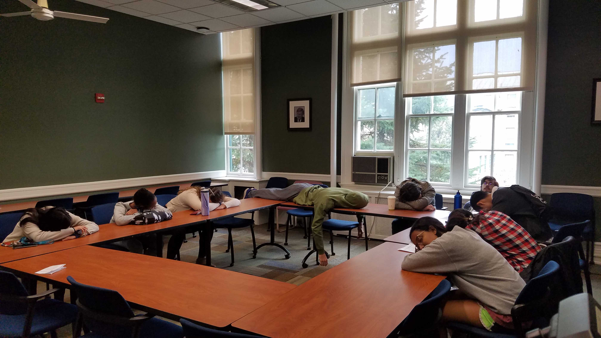

What does it mean to be a good mentor?
When I mentor students, I ensure that the learning environment is one where students are comfortable enough in that they do not feel threatened, are encouraged to think aloud, and feel a sense of belonging. I treat students with courtesy and dignity, and model this in front of other students to set the climate of the lab. Building strong relationships fosters a sense of trust, and working together on research projects in which students feel a sense of belonging ultimately enhances the quality of the work. This means facilitating bonding activities outside the lab such as...
The Scavenger Hunt of the Century



Taking a nap in a classroom

Pretending your tourists taking selfies with Walking to the Sky

Entire team’s reflection in something other than a mirror
Oldest Member of the team visiting his freshmen room
With an animal

Getting a hug from a stranger, Hugging a stranger, Having a stranger give a teammate a piggy back ride, and Proposing to a stranger

Selfie with entire team on one bench

Posing like Dr. Mao Yisheng